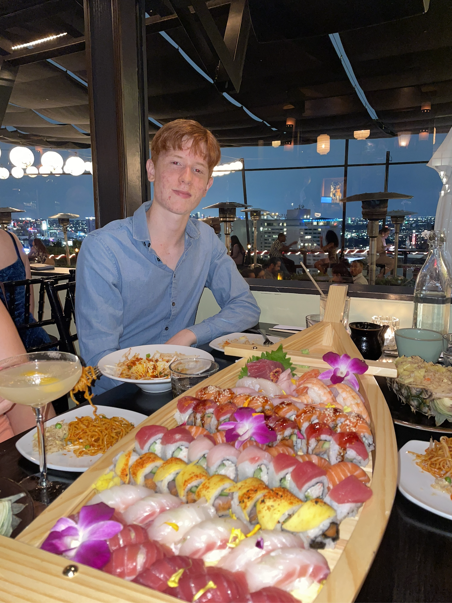

I am a driven and dedicated fourth-year undergraduate student at the University of California, Riverside,
with a passion for biology and a desire to contribute to the fields of primary care.
Since graduating from high school in 2022, I have immersed myself in a rigorous curriculum at UC Riverside, majoring in Biology
which includes courses such as General Biology / Chemistry, Organic Chemistry, Physics, Biochemistry, etc. These foundational
courses have equipped me with a strong theoretical understanding of biological
principles while igniting my curiosity to delve deeper into the intricacies of life sciences.
Beyond the classroom, I have actively sought opportunities to apply my academic knowledge in practical settings.
As a Laboratory Assistant for Dr. Hailing Jin’s lab, I have had the privilege to work alongside esteemed researchers,
and have honed my laboratory skills while gaining invaluable insights into
the research process. In addition to my academic pursuits, I am deeply invested in giving back to my community.
During my summer between high school and university, I dedicated my time to volunteering at my local hospital,
where I actively participated in community outreach events aimed at promoting health awareness and education and
embraced every opportunity to make a positive impact. Outside of academia and volunteer work, I am actively involved in
extracurricular activities that allow me to further explore my passion for Medicine, Biology, and other hobbies.
I am a proud member of Mini Medical School at UC Riverside, Inland Vineyard Free Clinic, as well as the Vice President for
the Fencing Club. Looking ahead, my ultimate goal is to leverage my undergraduate education as a stepping stone towards
medical school or a career in biotechnology. I am eager to delve deeper into the realms of medical research and innovation, where
I can apply my passion for biology to address pressing healthcare challenges and contribute to advancements in patient care and
treatment modalities.